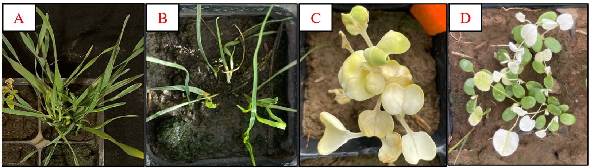

Waterhemp has become the most troublesome weed species across Wisconsin cropping systems and has developed resistance to different POST herbicides (please see: “Waterhemp got you worried? WiscWeeds’ been there, done that”). PRE-emergence (PRE) herbicides with soil residual activity have become the foundation for chemical waterhemp control. However, the use of such herbicides can also negatively impact the establishment of cover crops interseeded or overseeded into corn. A potential strategy for achieving effective waterhemp control and cover crop establishment is to select effective PRE herbicides and compatible cover crop species which is the main goal of the research described herein.
If you are not familiar with interseeding and overseeding, these are two methods of establishing cover crops into a standing crop, such as corn (Figures 1A & B). Interseeding involves planting the cover crops between the rows of the main crop early in the growing season, while the main crop is still growing; V3-V7 as the recommended growth stages for cover crop interseeding in corn (Figure 1A). On the other hand, overseeding involves establishing the cover crops just before or at crop maturity (Figure 1B). Thus, interseeding and overseeding allow for earlier planting before corn harvest which buys time for cover crop establishment and biomass production compared to the cover crops planted after corn harvest, and that is particularly important in regions with short growing season such as Wisconsin.

More growers across the US Midwest are considering interseeding and overseeding cover crops into corn to reduce soil erosion, improve soil health, suppress weeds, increase biodiversity, and provide forage or grazing opportunities for livestock. Remember, if your crop is harvested for human consumption or animal feed, you must comply with the plant-back intervals (PBIs) established by the U.S. Environmental Protection Agency (EPA) that dictate the minimum period of time between a pesticide application and the planting of your next crop. PBI restrictions do not apply to cover crops planted solely to improve soil quality, reduce erosion, or suppress weeds (which is the focus of this research effort), since there is no risk of animal and/or human dietary exposure.
Now let’s bring back the residual PRE herbicides and interseeding and overseeding concept. Based on the challenges in controlling troublesome weeds, such as waterhemp, and the potential risk of further weed resistance, the WiscWeeds Program recommends PRE herbicide premixes with at least two sites of action (SOAs) for enhancing residual weed control, which limits the cover crop species options to be interseeded or overseeded into corn. This begs the question: “Is the interseeding or overseeding system a reality for Wisconsin corn growers that have waterhemp in their fields?”. We established two studies in 2021 and 2022 to start answering this question. One was conducted in the field to select PRE herbicides that provide effective waterhemp control and another in the greenhouse using field-treated soil via bioassay to select potential herbicides that caused minimal impact on cover crop established at different times after application.
Field study: treatments consisted of 18 single and multiple sites of action (SOAs) PRE herbicides plus a nontreated check.
Greenhouse bioassay: four bioindicator cover crop species were used in the greenhouse bioassay (Figure 2): annual ryegrass (Lolium multiflorum L.), cereal rye (Secale cereale L.), radish, (Raphanus sativus L.), and red clover (Trifolium pratense L.). We used field-treated soil collected at 30 days after treatment (DAT; V3 corn growth stage - interseeding system) and at 70 DAT (V10 corn growth stage - overseeding system.) For additional information, please watch the following video: “Concerned about herbicide carryover with interseeded cover crops? Try a bioassay!”. The data (cover crop injury and biomass) were collected 28 days after sowing the cover crop seeds.
Field results: most herbicides provided >75% of waterhemp control (Figure 3) and herbicide premixes with more than one SOA tended to provide better waterhemp control than herbicides with a single SOA (see “2022 Wisconsin Weed Science Research Report (PDF)” for more detailed results and information).
How about the cover crops? Did these herbicides negatively impact their establishment?
Greenhouse bioassay results: in fact, premixes with 2 & 3 SOAs had a higher negative impact on cover crops than herbicides with a single SOA.
All SOA groups (2 [thiencarbazone-methyl], 4 [clopyralid], 14 [saflufenacil], 15 [acetochlor, dimethenamid-P, and S-metolachlor], and 27 [isoxaflutole and mesotrione]) PRE herbicides tested, except 5 (atrazine and simazine), resulted in biomass reduction of at least one cover crop at 30 and 70 days after treatment (DAT).
As expected, higher injury was observed when cover crop were seeded 30 DAT (overseeding system) versus 70 DAT (interseeding system).
Annual ryegrass and cereal rye were sensitive to treatments containing herbicide group 15 (acetochlor and S-metolachlor) but not as impacted by herbicide groups 2, 4, 5, 14, and 27 at 30 and 70 DAT (Figure 4).
Radish and red clover were sensitive to treatments containing herbicide groups 2, 4, and 27 but not as impacted by herbicide groups 5, 14, and 15 at 30 and 70 DAT (Figure 4).

In summary, PRE herbicide premixes had a better overall performance in waterhemp control compared to PRE with a single SOA, but had greater negative impact on cover crop establishment. Cereal rye was the least sensitive species to the most effective herbicides for waterhemp control, followed by radish. Red clover and annual ryegrass were the most sensitive cover crop species to the most effective herbicides for waterhemp control.
Take Home:
There is a potential to achieve effective residual waterhemp control while also interseeding or overseeding cover crops into corn. However, it requires careful planning and management. For instance, cover crops species interseeded or overseeded into corn should be carefully selected depending on the soil residual PRE herbicide applied.
Cereal rye was the least sensitive species to the most effective herbicides for waterhemp control, followed by radish. Red clover and annual ryegrass were the most sensitive species to the most effective herbicides for waterhemp control.
This research results focus on cover crops grown for conservation purposes, not for feed. Therefore, farmers should consult both the research data and plant-back intervals (PBIs) when considering crops for animal consumption.
Moving forward, we intend to conduct field experiments to further validate our bioassay findings and improve our herbicide selection recommendations for interseeding and overseeding systems. There is still a lot to be learned and research to be conducted in these new systems. So, our goal with this article, is to share that it can be challenging, but that there are weed control options for farmers and practitioners interested in this new cover crop-corn management systems. Stay tuned for additional information regarding this topic!
Additional Resources:
Interseeding cover crops (Smith & Ruark, 2022)
Herbicides rotational restrictions for cover and forage cropping systems (Smith et al. 2019)
Interseeding cover crops into corn and soybean: what we’ve learned (Rees & Proctor, 2021)
Interseed cover crops early into corn for maximum growth (Wallace 2022)
The research reported herein was led by Tatiane Severo Silva (former WiscWeeds PhD student). Click here to see Silva’s slides presented during the 2022 North Central Weed Science Society Meetings (December 2022) in St. Louis, MO. Silva also presented a video (“Concerned about herbicide carryover with interseeded cover crops? Try a bioassay!”)at the same Conference. Silva won first place paper and video presentations (congrats Tatiane!).
This article was written by Tatiane Severo Silva (Postdoctoral Research Associate) with the support of Nick Arneson (Outreach Program Manager) and Rodrigo Werle (Associate Professor). All authors are affiliated with UW-Madison.
Thanks to Ryan DeWerff (Research Specialist) and Dan Smith (Outreach Specialist) for their assistance with the field experiments, and the WiscWeeds team, Rock County Farm, and Lancaster Agricultural Research staff for supporting this research.